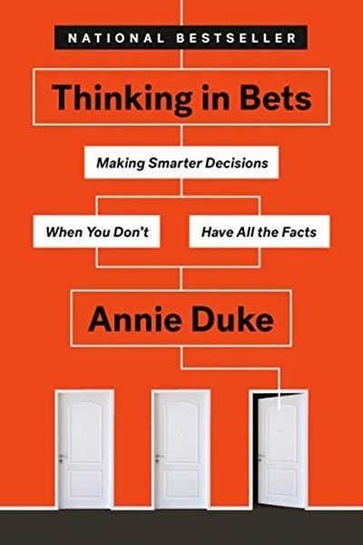

Library › Psychology & People
Thinking in Bets — Summary & Key Lessons

How the world's best poker player makes smarter decisions in a world full of luck — by thinking in probabilities, not certainty.
📖 OPEN THE FULL INTERACTIVE BREAKDOWN →🌐 Read it in Hindi, Hinglish, Gujarati, Tamil & 22 more languages — free, with audio.
💡 The Big Idea
Annie Duke, a World Series of Poker champion, argues that life is poker, not chess: every decision happens with incomplete information and luck plays a huge role. So judging a decision by its result is a fool's game — great decisions can lead to bad outcomes and vice versa. The fix: think in bets. Frame every choice as a probability ('I'm 70% sure this works'), separate decision quality from outcome quality, and build a group of truth-seekers who help you see your blind spots.
🧠 The 6 Key Lessons
Lesson 1: Life Is Poker, Not Chess
Decisions Are Bets
Chess has no luck — the better player always wins. Poker has luck, hidden information and incomplete data — exactly like life. When you accept that every decision is a bet on an uncertain future, you stop needing to be 'right' and start wanting to be 'accurate'. That shift is the foundation of better thinking.
📖 Example: Duke tells of a doctor who chose the right treatment by all available evidence — and the patient still died. Judging the doctor as 'wrong' would be wrong: it was a good bet that lost. The same logic applies to job choices, investments and relationships. Read the full example →
⚡ Do this: Before your next decision, write your confidence: 'I'm X% sure this is right.' Just forcing the number reduces overconfidence instantly.
Lesson 2: Outcomes Are Not Report Cards
Results Are Lousy Feedback
We naturally judge decisions by how they turned out — but with luck in the mix, outcomes are noisy. A bad outcome doesn't mean a bad decision; a good outcome doesn't mean a good one. Evaluate the PROCESS: was this a good bet given what you knew at the time?
📖 Example: Two investors make the same bet: one wins, one loses. If you reward the winner and punish the loser, you've learned nothing — same process, different luck. Duke's rule: review decisions on the quality of the reasoning, not the roll of the dice. Read the full example →
⚡ Do this: Keep a decision journal: for one week, log each decision + your confidence % + your reasoning. Review later against the process, not just the result.
Lesson 3: Widen Your 'Could' — Think in Frequencies
Wanna Bet?
When you think in absolutes ('this WILL work'), you close your mind to evidence. When you think in probabilities ('this works 70% of the time'), you stay open to new information. Duke's trick: replace 'could' with numbers — instead of 'this could fail', say 'this fails maybe 25% of the time'.
📖 Example: In poker, Duke constantly estimates hand probabilities; in life she applies the same: 'the startup has maybe a 15% shot' beats 'it's a sure thing'. The 15% framing lets you prepare for the 85%. Read the full example →
⚡ Do this: Catch yourself saying 'will' or 'won't' — reframe as a percentage. Ask: 'If this happened 100 times, how many would succeed?'
Lesson 4: The Resulting: Stop Hindsight-Blaming Yourself
The Resulting Trap
Hindsight bias makes past outcomes look inevitable — 'I should have known'. This creates shame for bad luck and false confidence from good luck. The cure: imagine the alternative history — what WOULD have happened if the other branch of the bet had played out. That's how you learn the real lesson.
📖 Example: Duke describes missing a poker hand everyone folded — and realizing she'd have lost more by staying in. The 'good' fold looked bad at first glance; the alternative history showed it was right. Read the full example →
⚡ Do this: After any outcome, ask: 'If the other result had happened, what would I have learned?' This kills the 'I knew it' illusion.
Lesson 5: Build a Truth-Seeking Group
The Group
Your brain is wired to defend its own beliefs, not examine them. The antidote is a small group of people who will tell you the truth — and who share your goal of accuracy over winning arguments. Duke's 'truth-seeking' rules: no ego, no saving face, credit for changing your mind.
📖 Example: Duke built her decision group of sharp friends who bet on each other's predictions and called out each other's blind spots. The group's value: 'they helped me see the world as it is, not as I wanted it to be'. Read the full example →
⚡ Do this: Find one or two people who will honestly challenge you. Share a decision with them this week — and genuinely listen to the objection.
Lesson 6: Decisions Are Bets — Separate the Choice From the Outcome
Life Is Poker, Not Chess
Duke's core reframe: every decision is a bet on an uncertain future, so a good decision can have a bad outcome and vice versa. Judging decisions by results (resulting) is the most common thinking error — it trains you to repeat bad process when it happens to win. Evaluate the quality of your thinking, not the luck of the outcome.
📖 Example: A surgeon's risky but well-reasoned procedure that fails is still a good decision; a reckless gamble that pays off is still a bad one. Poker players know this intimately — they evaluate hands, not pots, which is why the best players can lose a session… Read the full example →
⚡ Do this: After your next important decision, write your reasoning and confidence level beforehand; review the decision's quality separately from what actually happened.
✅ 5-Step Action Plan
- Attach a confidence % to every significant decision this week.
- Judge decisions by process, not outcome — journal it.
- Reframe 'will/won't' into frequencies.
- Run the alternative-history thought after every result.
- Recruit one truth-teller and run a decision by them.
⚠️ When This Doesn't Work
Annie Duke's 'decide by probabilities, judge the decision not the outcome' is the most honest framework in finance — and Melvin Capital followed its shadow: their GameStop short was a high-confidence bet with a tiny estimated probability of disaster, and the tail arrived with a margin call that cost $13 billion. Good process does not prevent bad outcomes; it only makes them rarer and survivable. Duke's own hedge-fund career had to end for her to see this clearly. Sizing matters more than confidence — never bet so big that being right 95% of the time still ruins you.
💀 The Graveyard Proves It
🎮 Melvin Capital — Shorted GameStop, Got Squeezed by Reddit. Burn: 53% in one month; fund dead by 2022. Read the full case study →
💬 Best Quotes from Thinking in Bets
- “The quality of your life is the quality of your decisions.”
- “Results are a lousy way to evaluate decisions.”
- “If you don't like your outcomes, change your process.”
Interactive version: mark lessons as read, listen in your language, share quote cards.